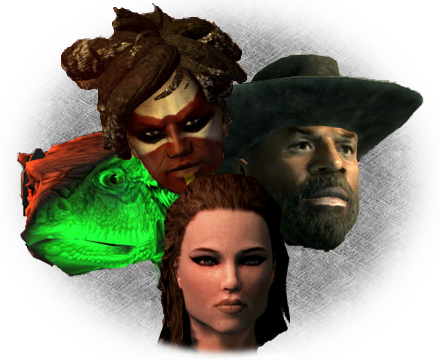

Welcome to the profile manager help documentation and readme. To get started click here to read the getting started documentation. It is also recommended to read the Preferences and Settings Window's Game Settings section to make sure that the games settings have the correct files.
This help documentation is also available online at http://pmanager.chocklydigital.com/help/.